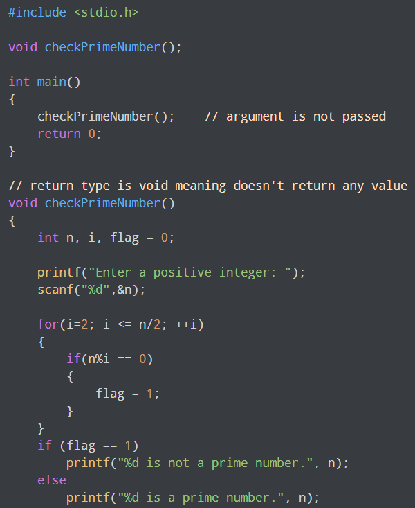

A function is a block of code that performs a specific task.
To understand examples in this page, you should have the knowledge of the following topics: Syntax of a function return_type function_name (argument list) {
Set of statements – Block of code }
return_type: Return type can be of any data type such as int, double, char, void, short etc. Don’t worry you will understand these terms better once you go through the examples below. function_name: It can be anything, however it is advised
to have a meaningful name for the functions so that it would be easy to understand the purpose of function just by seeing it’s name. argument list: Argument list contains variables names along with their data types. These arguments are kind
of inputs for the function. For example – A function which is used to add two integer variables, will be having two integer argument. Block of code: Set of C statements, which will be executed whenever a call will be made to the function. Do you find above terms confusing? – Do not worry I’m not gonna end this guide until you learn all of them :) Lets take an example – Suppose you want to create a function to add two integer variables.
There are two types of function in C
User Define function :The function Define and declare by user
default Function: This function is by default define in computer libarary
Example of User define function:
#include
< stdio.h> int addition(int num1, int num2) {
int sum; /* Arguments are used here*/
sum = num1+num2; /* Function return type is integer so we are returning * an integer value, the sum of the passed numbers. */
return sum; }
int main() {
int var1, var2; printf("Enter number 1: "); scanf("%d",&var1);
printf("Enter number 2: "); scanf("%d",&var2);
/* Calling the function here, the function return type * is integer so we need an integer variable to hold the * returned value of this function. */
int res = addition(var1, var2); printf ("Output: %d", res); return 0; }
Example of user define function is : sqrt(),max(),min(),abs() etc./div>
Types of user define function :
Example 1: No arguments passed and no return value:

Example 2: No arguments passed but a return value
#include
< stdio.h> int getInteger(); int main() {
int n, i, flag = 0; // no argument is passed n = getInteger(); for(i=2; i
<=n/2; ++i)
{ if(n%i==0){
flag = 1; break;
}
}
if (flag == 1) printf("%d is not a prime number.", n); else
printf("%d is a prime number.", n); return 0; }
// returns integer entered by the user int getInteger() {
int n; printf("Enter a positive integer: "); scanf("%d",&n);
return n; }